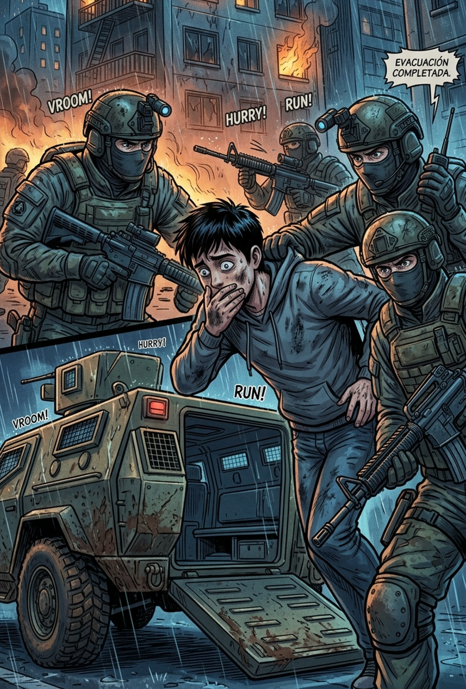

3/3
Camino Final: El Rescate Militar
🔊 Narración:
Cubriéndote el rostro del humo, abres la puerta y desciendes velozmente por las escaleras rodeando los restos del desastre. Logras salir al aire libre justo cuando el último blindado frena frente al edificio.
Dos soldados te cubren con sus armas y te arrastran al interior del transporte antes de cerrar la escotilla. Mientras la camioneta acelera alejándose de las llamas, comprendes que sobreviviste a lo imposible.
♦ ───── ♦